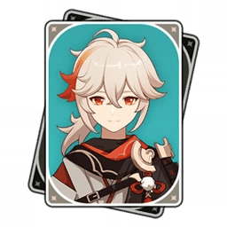
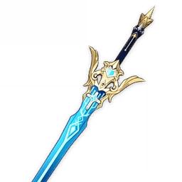
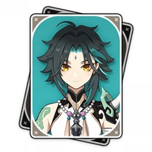
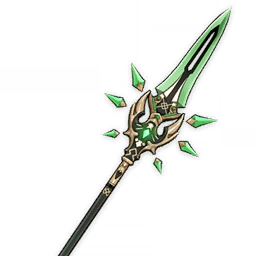
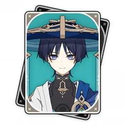
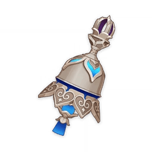
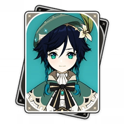
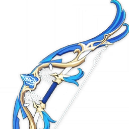
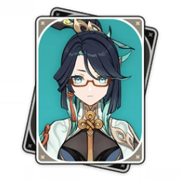
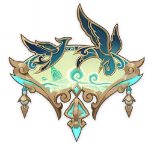

| Image | Name | Weapon | Role | Lore |
|---|---|---|---|---|
|  | Kaedehara Kazuha | Sword  |
Support | Nomadic/Wanderer. Soft-spoken. Last son of Kaedehara Clan. Able to hear and smell everything around him very clearly. Friend died trying to duel the Electro Archon so he fled Inazuma. Wanders around Teyvat trying to find a way to light up his friend's vision. In order to save the traveler, blocked the Archon's blade. This was when his friend's vision lit up. Blocked blade of strongest Archon while using two visions at the same time |
|  | Xiao | Polearm  |
Main DPS | Conquerer of Demons. Illuminated Beast. Adeptus. Only Yaksha |
|  | Wanderer | Catalyst  |
Main DPS | Puppet. Created by Electro Archon, Raiden Ei. Had his existence erased. After, came back as "Wanderer". Past Names: Kabukimono, Kunikuzushi, Scaramouche, The Balladeer, Shouki no Kami. Used to be a Fatui Harbinger. Successfully created an artificial God (Shouki no Kami) Got vision while trying to defeat Shouki no Kami(after gaining memories back.) |
|  | Venti | Bow  |
Support | Anemo Archon. Bard. Pretends to be a normal human/bard. Hides the fact he is the Anemo Archon. Does not need a vision to use anemo. One of the only original seven Archons. Able to take on other forms. Current appearance is of his old friend that passed away. Archon name: Barbatos |
|  | Xianyun | Catalyst  |
Support | Cloud Retainer. Adeptus. Adeptus form is a crane. Fought during Archon War. Name as a human: Xianyun. Her domain in the Liyue mountains is known to have multiple intricate puzzles. Protects Liyue during times that need her. |